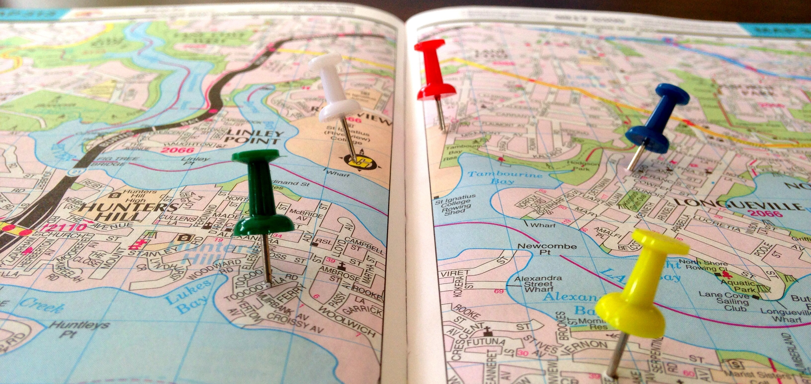
Geoportfolio
Ethan Stone
About
This website is the geoportfolio of Ethan Stone. The website entails
information that is academically and profesionally related to the field of geospatial science
I am currently studying Geospatial Science at RMIT in my 4th final year as well as working as a land surveyor in which I have been working since 2021.
I am very keen to take steps on progressing my career further and have been looking at potential options to enhance my knowledge of my chosen study areas.
I am a lover of travelling and the great outdoors and believe that with my prior knowledge as a land surveyor and my current study area of geospatial science I would be greatly suited to excelling within this field.
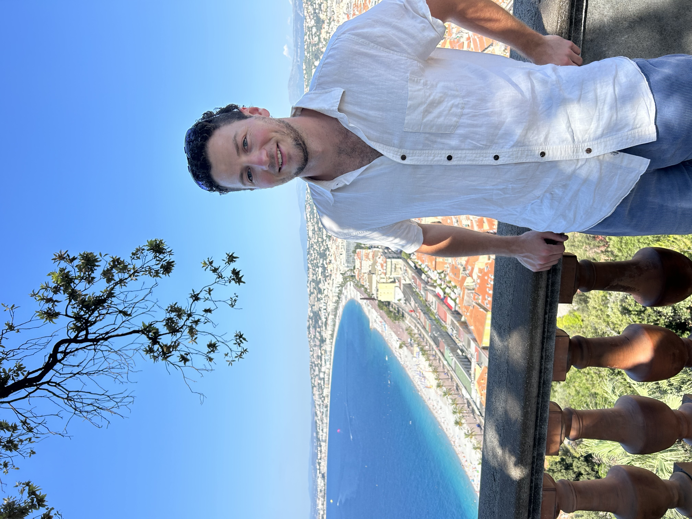
Academic Portfolio Overview
Earth Observation Science
Earth Observation Science consists of analysing landforms using spatial data by using coding within USGS's Earth Explorer. This subject was primarily pracitcal based with only two main assessments accompanied by 4 practicals.
- Practical 2: Created a report based off spectral response across seasons in different areas
- Practical 3: Land cover classification of the Margaret River Region
- Practical 4: Analysing Stomatal conductance within vineyards in Coonawarra
Below are the three screenshots from the above practicals.
Note: If map display is too small, right-click the image and 'Open in new tab' to allow zooming of the map.
Example of NBR from Prac 2
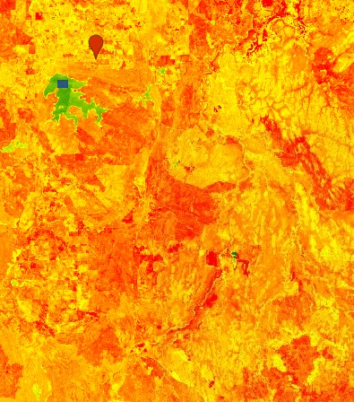
Margaret River Classification from Prac 3
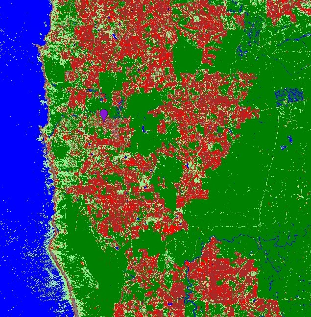
Coonawarra NDVI from Prac 4
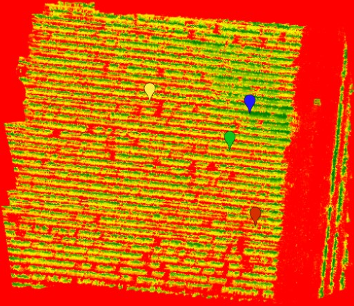
SIS Analytics
SIS Analytics involved the use of programs such as ArcMap and ArcGIS pro to enhance and manipulate spatial data for the outputs of maps and reports.
The Subject involved participating in a range of Labs and 2 assesments: The first assessment involved the creation of maps across victoria of priamry schools and rainfall looking at distribution
using Universal Kriging and other weighting functions. Assessment 2 then investiagetd How Regional Migratrion has changed in Australia from 2010 to 2022.
The Labs each looked at similar topics investigating Spatial interpolation, Analysing Spatial Patterns and Spatial relationships.
Note: If map display is too small, right-click the image and 'Open in new tab' to allow zooming of the map.
Kernal Density Map of Primary Schools
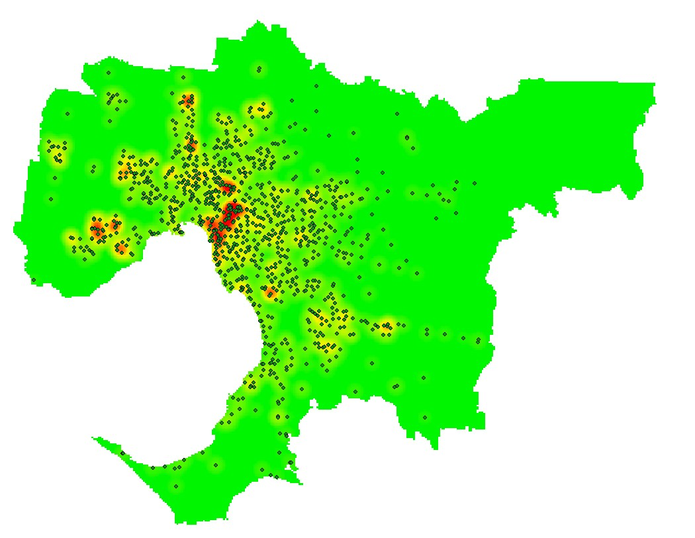
Population Analysis 2010-2022
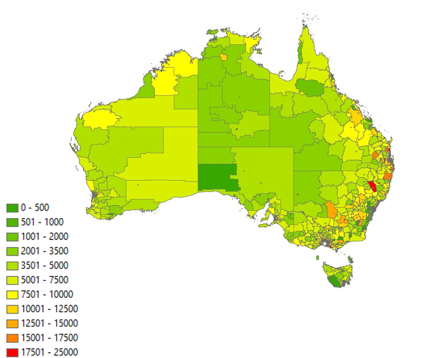
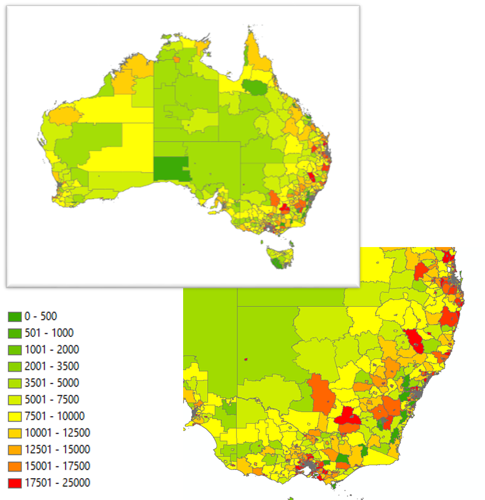
Victorian rainfall
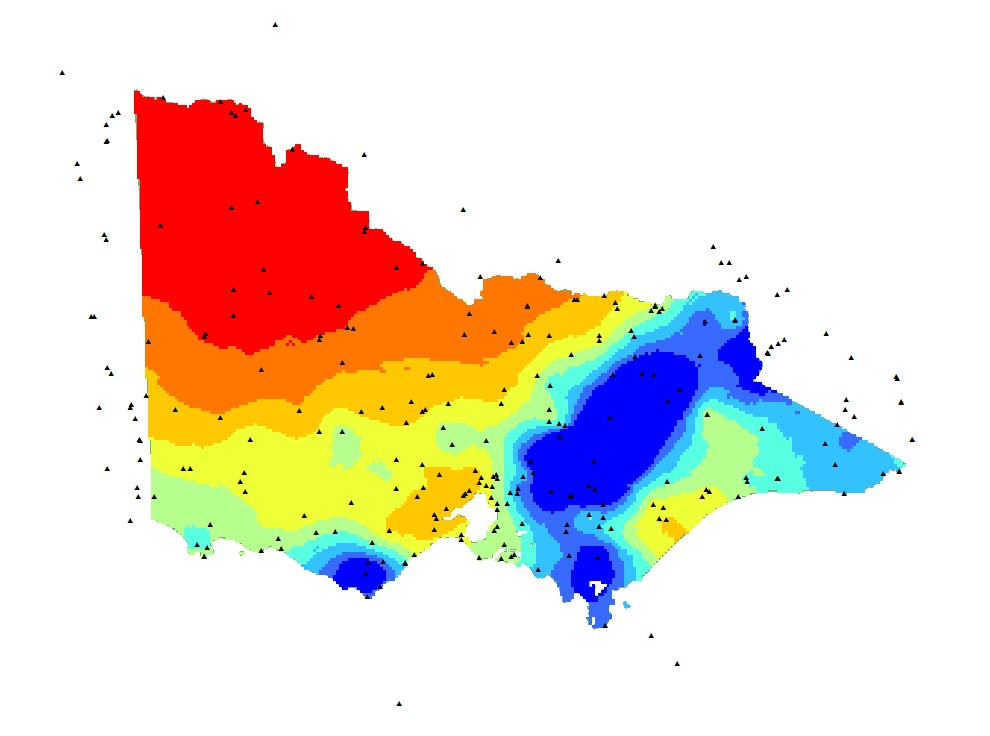
Industry Experience
This page will briefly cover all my work experience (as of September 2024) within the geospatial science and Surveying industries. The main Company I have worked for is JCA Land consultants.
I have worked with JCA for 3.5 years and as of August 2024, i have recived a role at Jacobs as a geospatial consultant.
JCA Land Consulatnts
Geospatial Intern - Image Processor
February 2021 - current, September 2024
I have worked for JCA Land Consultants alongside my surveying studies for the last 3.5 years. I started at JCA in Feb 2021 whilst i was studying an advanced diploma of surveying.
I have completed work as a Junior Project Surveyor at JCA Land Consultants.
Within this time period I have become familiar with all types of Cadastral Surveying processes whilst completing a large variety of field work as well as office processing using Listech Neo software.
As part of the Survey team, the work I was required to process and follow jobs through from the field data collection to office processing and drafting. Through this i have learnt
the skills of a surveyor as well as enabling good quality assurance to ensure that the clients are recieving high quality output.
Jacobs
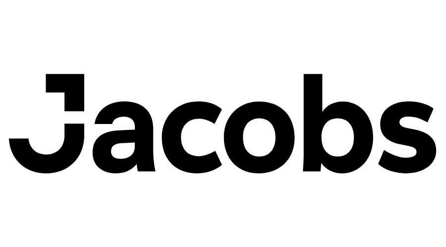
Graduate Geospatial Consultant
August 2024 - Present (as of September 2024)
I have just recently recived a graduate role as a geospatial consultant with Jacobs Australia. I am yet to start full work but am part of their Melbourne Team, due to awaiting job clearance.
I am keen to progress and develop my geospatial career with the Jacobs Team and look foward to teh work i am exposed to.
Skills and Proficiencies
 |
GIS |
 |
QGIS |
 |
Cartographic Principles |
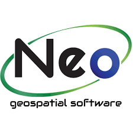 |
Listech Neo |
 |
ArcGIS Pro |
 |
Photogrammetry and Drone Mapping |
Credits and Attributions
The following programming languages and software were used to create the website
- HTML
- CSS
- JavaScript
- Visual Studio Basic
The deliverables contains content from the following subjects:
- SIS Analytics (GEOM1057)
- Earth Observation Science (GEOM2084)
Special thanks to the following people who have helped me make this website with their expertise and guidance:
- Chayn Sun
- Nicholas Lee
- Shinjita Das
As per the policy of using the Flaticons with a free account, the attributions and crediting of the creators of the icons are as below:
Attributions of icons used: